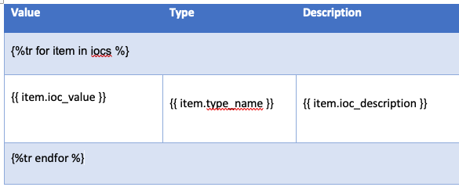

Reports
IRIS has the ability to generate reports based on the data of an investigation.
The reports templates can be managed in Advanced > Templates.
Info
This section is only available for users with the Admin role.
There is two types of reports :
- Investigation; these contains the investigation data and can produces a custom-ready document
- Activities; these contains activities done on the case and can be used as a follow-up
Supported formats
The following report formats are supported:
- docx
- markdown (.md)
- html
Structure of templates
Reports templates are made of tags, which are then processed and filed by the template engine of IRIS.
The templates can have any forms as soon as they respect the tags. We are providing two example of reports.
Info
The templates includes a few lines that describes how to handle styles. These should not be removed. They are be present in the generated reports and need to be removed manually.

Available tags
The following tags are available. None are mandatory. If a tag is mistyped, the generation step will produce an error message.
Hint
Standard objects are accessible with {{ objectname }}.
List objects can be looped:
case.name: Name of the casecase.description: Description of the casecase.open_date: Case open datecase.close_date: Case close datecase.opened_by: User that initially opened the casecase.for_customer: Customer linked to the casecase.soc_id: SOC ID number linked to the case-
evidences: List of evidence objects (see below - givenevidenceas loop variable)evidence.filename: File name of the evidenceevidence.date_added: Date of registrationevidence.file_hash: Hash of the evidenceevidence.added_by: User who added the evidenceevidence.custom_attributes: Custom attributes of the evidence
-
iocs: List of IOCs objects (see below - giveniocas loop variable)ioc.ioc_value: Value of the IOCioc.ioc_description: Description of the IOCioc.ioc_type: Type of IOCioc.ioc_tags: Tags linked to the IOCioc.custom_attributes: Custom attributes of the IOC
-
notes: List of notes objects (see below - givennoteas loop variable)note.note_title: Title of the notenote.note_content: Content of the notenote.note_creationdate: Creation date of the notenote.note_lastupdate: Date of last updatenote.custom_attributes: Custom attributes of the note
-
tasks: List of tasks objects (see below - giventaskas loop variable)task.task_title: Title of the tasktask.task_description: Description of the tasktask.task_open_date: Open date of the tasktask.task_last_update: Last update of the tasktask.task_close_date: Date of closuretask.task_status: Status of the tasktask.task_tags: Task for the tagstask.custom_attributes: Custom attributes of the task
-
timeline: List of events objects (see below - giveneventas loop variable)event.event_title: Title of the eventevent.event_content: Content of the eventevent.event_raw: Raw content of the eventevent.event_date: Date when the event happenedevent.event_source: Source of the eventevent.category: Category of the eventevent.event_tags: Tags of the eventsevent.last_edited_by: User who last edited the eventevent.assets: List of assets names linked to the eventevent.custom_attributes: Custom attributes of the event
Examples
Full documents
We are providing two example of full reports.
Snippets
The following snippets aimed to be placed directly in the DOCX documents.
Loops and tables
Standard loops
A loop needs to be used for list objects.
The IOCs of this case are :
{% for ioc in case.iocs %}
- {{ ioc.ioc_value }}
- {{ ioc.ioc_description }}
{% endfor %}
Table loops
To use a loop in a table, a tr tag needs to be added to the loop and the loop directly integrated in the table.
The IOCs of this case are in the following table :
{%tr for ioc in case.iocs %}
{{ ioc.ioc_value }}
{{ ioc.type_name }}
{{ ioc.ioc_description }}
{%tr endfor %}

Nested loops
Loops can be nested. Don't forget to close each loop.
{%for ioc in case.iocs %}
Custom attributes of {{ ioc.ioc_value }} :
{% for attribute in ioc.custom_attributes %}
- {{ attribute }}
{% endfor %}
{% endfor %}
Conditions
Standard
{% for asset in assets %}
{% if asset.compromised %}
Asset {{ asset.asset_name }} is compromised
{% endif %}
{% endfor %}
List is not empty
To check if a list of objects is not empty, use the processor tag count.
Markdown handling
The case summary and notes are in markdown. A processor tag should thus be added |markdown.
This is an example of recursive notes :
{% for note in case.notes %}
My note named {{ note.note_title }} :
{{ note.note_content|markdown }}
{% endfor %}
Troubleshoot
Most of the time an error of generation is due to misspelled tag or a missing closing tag ({% endfor %}, {% endif %}, etc).
In case you cannot figure out what is going wrong, don't hesitate to reach us on Discord.